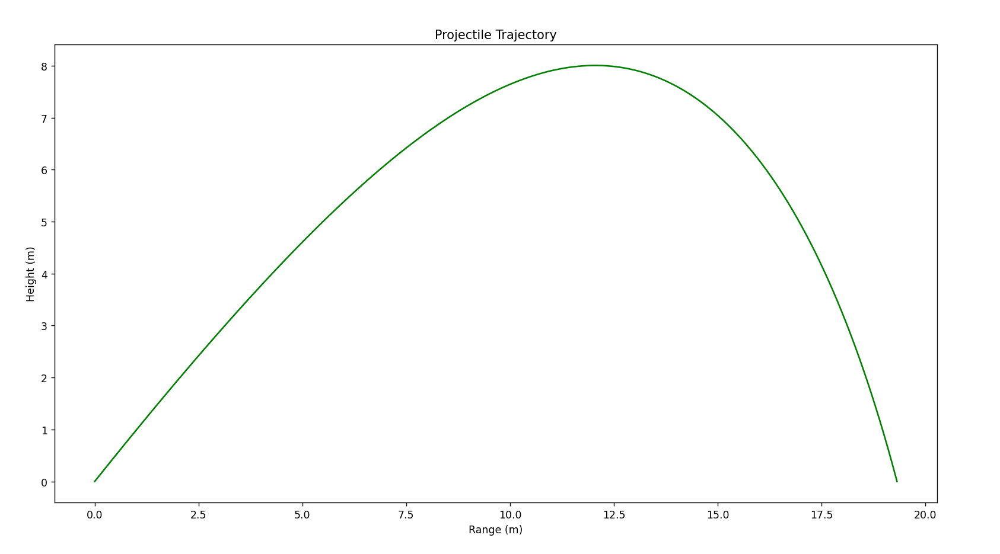

Engineering & Machine Learning Projects
View Full Project on GitHub →1. Custom Physics Engines (Training Data Generation)
Initially, I was drawn to using the forward Euler method, a simple first order method to simulate a projectiles trajectory. However fine-tuning the time step was a tedious task - a time step too large and the simulation becomes very numerically unstable, a time step too small and the computational expense of the simulation skyrockets. Furthermore it just wasn't as accurate as other methods because it assumed velocity and acceleration stayed constant throughout the entire time step. This led me to pursuing a better method for simulating the trajectory, the Runge-Kutta 4 method.
The RK4 is a 4th order method that I used to simulate a trajectory after the shortcomings of the forward Euler. The RK4 method doesn't assume constant velocity or acceleration during the time step, allowing the trajectory to be far more accurate. Furthermore when the time step is halved, the error in the RK4 method plummets by a factor of 16 as compared to the forward Euler methods error which would drop by a factor of 2. So this method doesnt require as small of a time step and is far more accurate, which is computationally much cheaper.

RK4 simulated trajectory for a padel ball (Initial velocity: 30m/s, Launch angle: 45°).
2. Linear Regression via Gradient Descent
Now that I had accurately simulated the trajectory, I had acquired my training data. The next step was to build the model. I started by looking into Linear Regression using gradient descent, which I used Imperials "Mathematics for Machine Learning" course to truly understand the underlying maths behind the model. So I derived the equation by hand and implemented the model from scratch.
This model required fine-tuning parameters such as the learning rate, number of epochs (passes) and also the number of features I gave the model. Since this was an iterative approach, the model needed thousands of epochs to perform somewhat accurately, however this was far too computationally expensive and simply not accurate enough. Furthermore when I attempted polynomial regression, the accuracy was laughable. Of course since projectile motion is fundamentally non-linear, I needed a better model. The GD regression model couldn't even produce a graph of the curve without running into an overflow error, demonstrating its inability to properly deal with higher degree polynomials.
> Output exceeds computational limits for higher degree polynomials during Gradient Descent.
3. Linear Regression via Normal Equation
I soon learned that the exact weights that govern a curve can in fact be calculated in one step - one calculation. No loops, no iterations. This was done using the closed form normal equation. After learning the maths and deriving the equation by hand once again, I implemented this new regression model.
This model performed far better than the gradient descent one, computationally much cheaper while also being far more accurate. Most importantly, the model had no trouble with higher degree polynomial equations. This was the model to use.

Model evaluation utilizing the Normal Equation for the curve y = 4x³ - 6x² + 7x - 5.
Next Steps: Neural Networks
I am currently applying the mathematics from the Imperial MML course to build a neural network from scratch to further optimize these predictions.